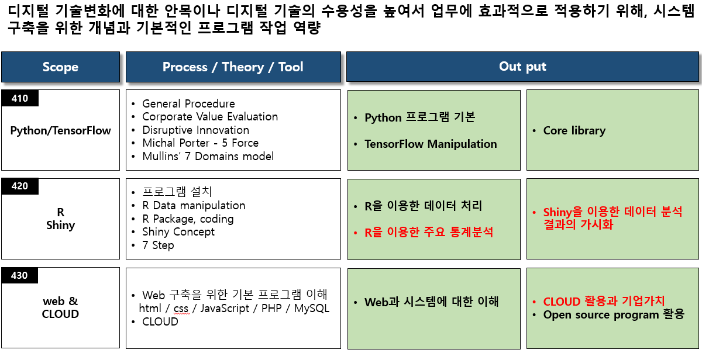
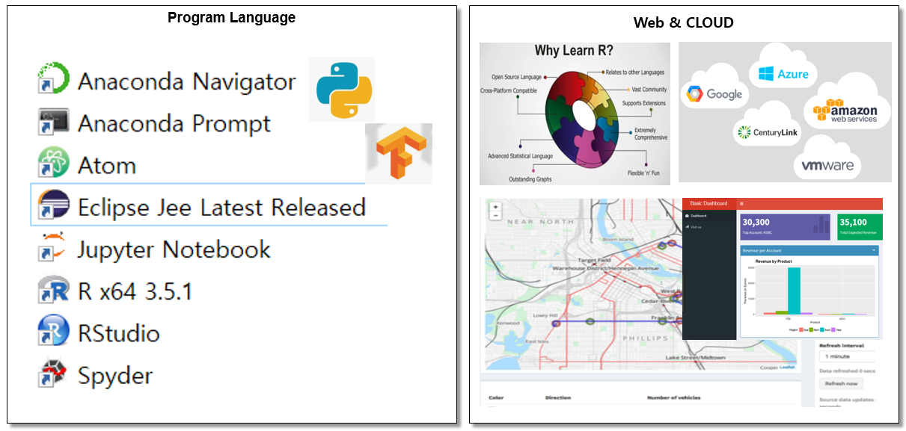
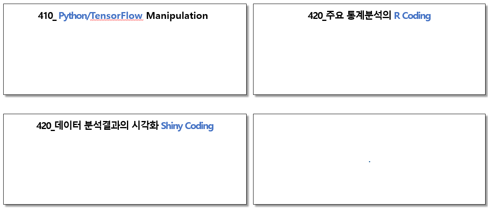

Knowledge scope - Program Language

R을 이용 주요 통계분석과 Python/TensorFlow를 이용 머신러닝을 구현할 수 있게한다.
주요 output - Program Language
Open source를 이용 현장에서 데이터의 통계분석와 머신러닝 분석을 스스로 빠른 분석을 통하여 의미있는 시사점을
찾는 것이 중요하다.

source: https://www.ctl.io/cloud-application-manager/ https://paulvanderlaken.com/2017/08/10/r-resources-cheatsheets-tutorials-books/ https://medium.freecodecamp.org/build-your-first-web-app-dashboard-using-shiny-and-r-ec433c9f3f6c https://rstudio.github.io/shinydashboard/examples.html
새로운 방식의 프로세스, 시스템 및 솔루션은 Open source, CLOUD, API Economy를 적극 활용하여,
직원들이 맘껏 창의성과 역량을 발휘할 수 있도록 자유롭게 하는 것이다.
직원들이 통계분석, Machine Learnig, Open source R 로 데이터를 자유롭게 분석할 수 있다면
많은 부분에서 경쟁력이 달라지게 될 것이며, 이 일은 직원들 스스로 학습으로 가능하다.
프로세스, 시스템, 솔루션, 데이터 분석 및 디지털 활용에 대한 직원역량에 대하여,
기업이 추구하는 전략과 연계하여 관련 사항들을 효과적으로 연계하고 쉽게 사용할 수 있도록 방향을 제시하고 데이터를 기반으로 제시하고자 한다.
주요 Contents

새로운 것을 받아 들이는 직원들의 학습 체계 일하는 방식과 데이터 그리고 디지털 기술들
중요한 것은 사업 모델이며 어떻게 가능하게 할 것인가 이지 그 것을 꼭 내부에 만들 필요는 없다 : 지금 기업에서 혁신의 핵심은 얼마나 최고의 프로세스를 구축하는 것이 아니라 기업은 지속적으로 프로세를 손쉽게 변화시킬 수 있으며,
직원들이 자유롭게 외부의 자원을 활용하거나 협업이 가능하도록 디지털 기술을 능숙하게 다룰 수 있도록 하는 것이다.
지금 디지털 기술의 핵심 중의 하나는 데이터를 얼마나 직원들이 Machine learning, AI 및 통계 솔루션으로 다루어 현재의 문제점을 파악하거나
새로운 방식에 대한 결과를 사전에 해석할 수 있는 역량이다.
결국, 현재 기업의 역량은 프로세스의 유연성, 일회성 혁신이 아닌 외부 변화에 신속한 대응이 가능한 지속적인 혁신과 직원들의
데이터를 기반으로 하는 디지털 활용 역량이 될 것이다.